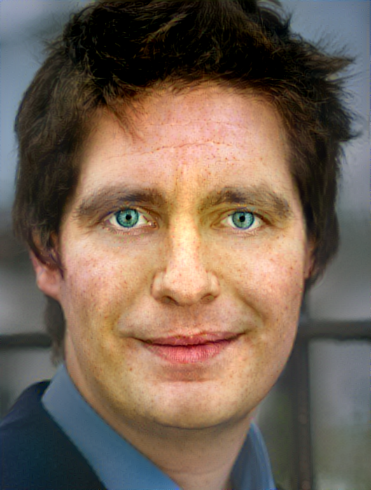

La transferencia de estilo neuronal es una técnica de optimización que se usa para tomando dos imágenes, una imagen de contenido, una imagen de referencia de estilo (como una obra de arte de un pintor famoso), para combinarlas de tal manera que parece que se “pinta” la foto de entrada con la imagen de estilo.
Desafíos
El objetivo es lograr efectos locales muy drásticos, por ejemplo, para encender las luces en Ventanas de rascacielos. Por otro lado, estos efectos no deben distorsionar los bordes y los patrones regulares, por ejemplo, para que las ventanas permanecen alineadas en una cuadrícula. Formalmente, buscamos una transformación que puede afectar fuertemente los colores de la imagen mientras no se pierda ningún efecto geométrico, es decir, nada se mueve o distorsiona.
La transferencia debe respetar la semántica de la escena. Por ejemplo, en un paisaje urbano, la apariencia de los edificios debe ser emparejado a edificios, y cielo a cielo; No es aceptable hacer que el cielo se vea como un edificio.
Pruebas
Primero se realizo una prueba con imagenes originales del proyecto para ver si los resultados eran parecidos a los mostrados.
 |
 | |
| Input | Style | Result |